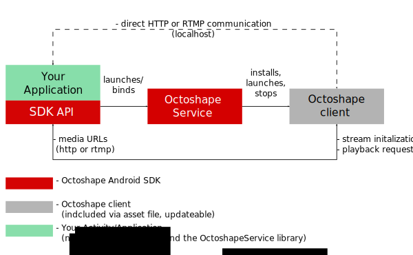

Android SDK Documentation
Version 1410300@v326
The Octoshape SDK provides parts of the Octoshape content delivery system on the Android platform, enabling developers to create applications with instant access to on-demand HD quality video and instant seek capabilities providing an unparalleled viewing experience.
The intention of this document is to provide Android application developers with the necessary information and reference, for integrating the live and on-demand content delivery system provided by Octoshape into Android applications. The Android SDK contains the following:
-
This introduction document, containing tutorials and examples.
-
The API documentation as HTML (javadoc/index.html).
-
Source Code for Reference Players .
-
The JAR files containing the API (/OctoAndroidLib/libs)
-
An Android Library Eclipse Project (/OctoAndroidLib)
Table of Contents
1. Introduction
. 1.1. Octoshape SDK Architecture
. 1.2. Supported Media / Streaming Formats
. 1.3. Supported devices:
2. Using the SDK and Getting Started
. 2.1. Setting-up a new project:
. 2.2. Importing the SDK reference applications:
3. Playing Octoshape streams
. 3.1. Creating and configuring OctoshapeSystem
. 3.2. Prepare your streams by setting up a number of StreamPlayer instances
. 3.3. Requesting playback and receiving URLs through callbacks
. 3.4. Playing an URL using the Android MediaPlayer
. 3.5. Handling errors
. . 3.5.1. Handling MediaPlayer Errors
. 3.6. Supporting multiple players
. . 3.6.1. Selecting a player
. . . 3.6.1.1. Playback using the Android MediaPlayer
. . 3.6.2. Playback using the Adobe FlashPlayer
. 3.7. Seeking for on-demand streaming
. 3.8. DVR for live streaming
4. Enabling remote playback using ChromeCast/Airplay
5. Ticket Restriction
. 5.1. Octoshape ticket system
. . 5.1.1. Introduction
. . 5.1.2. Octoshape stream configuration
. . 5.1.3. Issuing tickets
. . . 5.1.3.1. The authID
. . . 5.1.3.2. Setting options (the authInfo)
. . . 5.1.3.3. Hash calculation
. . . . 5.1.3.3.1. Algo 1 - MD5
. . . . 5.1.3.3.2. Algo 2 - HMAC-MD5
. . . . 5.1.3.3.3. Algo 3 - SHA256
. . . . 5.1.3.3.4. Algo 4 - HMAC-SHA256
. . . . 5.1.3.3.5. Adding extra options
. . 5.1.4. Octoshape client authorization
. 5.2. Using tickets in the Android SDK
6. Broadcasting live streams
. 6.1. Configuring the client
. 6.2. Creating and configuring OctoshapeSystem
. 6.3. Prepare your broadcaster by setting up a number of StreamPushers
. 6.4. Querying the status of StreamPushers
7. Enable Logging
8. Appendix I: player.html used for embedding Flash
1. Introduction
As Octoshape only provides a content delivery (e.g., data stream), the SDK does not contain any media player itself, but only the mechanism to utilize the Octoshape content delivery system. This makes the development using the Octoshape SDK fairly straightforward; doing so is the same approach as for any other Android video playback application.
We currently support the following architectures:
-
armeabi-v6
-
armeabi-v7a
-
x86
From an application developer perspective the SDK allows retrieval of media data
( e.g., rtmp://127.0.0.1:60001/ond/Octoshape ) from Octoshape streams
( e.g., octoshape://streams.octoshape.net/androidsdk/mp4/nascar_500 ), and
passing these to a media player. Moreover, the SDK API also
provides streaming features such as: seeking (ond-demand only), DVR (live-only), ticketing and live broadcasting.
1.1. Octoshape SDK Architecture
The SDK consists of two components the Java API, used by the application developer, and the Android Octoshape Service. The service is automatically launched and bound and only requiring adding it to the manifest file. The service installs the Octoshape Client from the assets files and launches / stops it, as needed. Once started, the Octoshape Client will then directly communicate with the application (see below figure).
Figure 1: Overview of the Octoshape SDK components

1.2. Supported Media / Streaming Formats
The SDK Octoshape supports the following streaming and media formats:
-
On-demand: HTTP (hls, mp4, mp3), RTMP (flv)
-
Live: HTTP (hls, mp3, ts), RTMP (flv)
As native Android playback capabilities are platform depended, we refer to the list of media formats for which Android offers built-in support ( Android Developer Pages ). Devices running Honeycomb (Android 3.x) or older, require a FlashPlayer or a Vitamio plugin for playing live video.
Moreover, there exists Android devices (e.g., STBs) with native media-frameworks supporting additional media formats and protocols (e.g, MPEG-TS over HTTP or HLS on Android 2.3). When targeting hardware with special media playback capabilities, different from those listed in the link above, please contact: support@octoshape.com.
Here an overview of the standard android formats and protocols, which are supported by Octoshape:
| Froyo (2.2) | Gingerbread (2.3) | Honeycomb (3.2) | Ice Cream Sandwich and Jelly Bean(4.0, 4.1, 4.2 and 4.3) | ||
|---|---|---|---|---|---|
| on-demand | mp3 | x | x | x | x |
| - || - | mp4 (1) | x | x | x | x (3) |
| - || - | flv | x | x | x | x (2) |
| - || - | HLS | x | |||
| live | mp3 | x | x | x | x |
| - || - | rtmp | x | x | x | x (2) |
| - || - | HLS | x |
- (1)
mp4 media may contain H.264 AVC with either AAC or MP3 audio, and meet the following requirements:
-
File does not use fragmented mp4 encoding (moof atoms)
-
The MP4 moov atom is located at the beginning of the file
Again here we refer to the "Video Encoding Recommendations" on the Android Developer Pages.
-
- (2)
On Android 4.x (ICS) flv media content is transmuxed and served as Http-Live-Streaming (hls).
- (3)
On Android 4.x (ICS) mp4 media content is transmuxed and served as Http-Live-Streaming (hls).
1.3. Supported devices:
The SDK currently supports Android 2.2, 2.3, 3.2, 4.0, 4.1, 4.2, 4.3, 4.4 (armv7a, armv6 and x86), and is tested on following devices:
-
HTC Desire A8181 (Android 2.2)
-
HTC Desire Z A7272 (Android 2.3.3)
-
Samsung Galaxy Tab GT-P1000 (Android 2.3.3)
-
Samsung Galaxy GTI-9100 (Android 2.3.3)
-
Samsung Galaxy Tab 10.1 (Android 4.0)
-
Samsung Nexus Galaxy (Android 4.4)
-
Samsung S3 (Android 4.3)
-
Samsung S4 (Android 4.3)
-
Nexus 7 (Android 4.4.2)
2. Using the SDK and Getting Started
It is recommended to use an Eclipse based IDE, as this allows direct import of the library and reference player projects.
Importing the OctoshapeLibrary project (/OctoAndroidLib) into an Eclipse workspace (File>Import) allow all Android projects to use the SDK by referencing to the library project OctoAndroidLib project.
2.1. Setting-up a new project:
-
Import the Octoshape Library project (OctoAndroidLib) into the Eclipse workspace.
-
You may need to remove the auto-generated /src folder from the build path (Project>Properties>Java Build Path>Source).
-
Create a new Android project.
-
Reference the OctoAndroidLib in your project as a library (>Properties>Android).
-
Add the JARs from /OctoAndroidLib/libs/ to your projects build path(>Properties>Java Build Path> Add Jar)
-
Copy the /assets folder from the OctoAndroidLib project to your project. You may want to delete sub-directories in /assets/octoshape, each representing an CPU architecture, which you don't target for. This reduces the application size.
-
Add the following node your projects manifest.xml, inside the <application> node:
<service android:name="com.octoshape.android.service.StreamService" android:process=":OctoProc"/>
For logging and development (allows calling
OctoStatic.enableLog(enableLog(boolean toConsole, java.lang.String filePath))add:<service android:name="com.octoshape.android.service.StreamServiceDebug" android:process=":OctoProc"/>
as a child of <application> node
-
Add INTERNET, ACCESS_NETWORK_STATE and WAKE_LOCK in the manifest by adding the following child to the <manifest> node:
<uses-permission android:name="android.permission.INTERNET"/> <uses-permission android:name="android.permission.ACCESS_NETWORK_STATE"/> <uses-permission android:name="android.permission.WAKE_LOCK"/>
2.2. Importing the SDK reference applications:
The SDK includes three different reference applications. The first two exemplify the use of the SDK with the Adobe Flash Player (OctoFlashPlayer) and the Android MediaPlayer (OctoMediaPlayer), respectively. Both applications only implement a subset of the available SDK features. The third reference application (OctoDemoPlayer) is a 'full-fledged' production like implementation, using the Android MediaPlayer.
The reference applications are directly imported into the workspace, will all dependencies set, only requiring the presence of the library project and coping the asset folder from the library project to the reference application.
3. Playing Octoshape streams
This chapter documents the retrival of a media URLs and how to pass these to the native Android media player. The media URL is received by the folloing number of steps.
-
creating and open the
OctoshapeSystemobject. This will launch the OctoshapeService, which installs and launches the Octoshape Client. -
specifying available media players (e.g., the native MediaPlayer).
-
creating and preparing
StreamPlayerobjects for each stream. -
requesting playback for a
StreamPlayer, returning the media URL for the requested stream.
In the following each of these steps will be more thoroughly explained. The complete examples using both the native Android mediaframework and using Flash are found in Reference Players.
3.1. Creating and configuring OctoshapeSystem
The
OctoshapeSystem
class serves as an 'entry-point' for the Octoshape service/client and
there must only exist one instance of OctoshapeSystem.
When openend, the object launches the Octoshape service, which starts the Octoshape client.
Instances are created using the OctoStatic class.
When the application closes the OctoStatic.close(Runnable r) must be called.
This unbinds the service, freeing memory and terminates established socket connections.
OctoshapeSystem
is created with the reference to a
ProblemListener
and a
OctoshapePortListener
. The
ProblemListener
reports problems for Octoshape
service and the Octoshape client (see section handling errors).
The OctoshapePortListener
receives a callback once the Octoshape client has successfully launched and bound to localhost, providing the bound port number.
Next, the available media players are specified by invoking:
public void addPlayerNameAndVersion(final String mediaPlayerId, final String mediaPlayerName, final String mediaPlayerVersion)
The different media player name are defined as constants in:
OctoshapeSystem.
Additionally, a OctoshapeSystemListener should
be set by
OctoshapeSystem.setOctoshapeSystemListener(OctoshapeSystemListener), providing the callback when a connection to the Octoshape client
is established.
As a last step
OctoshapeSystem.open()
is called, launching the OctoshapeSystem
(starting the Octoshape service and client), which will trigger the
callback for the OctoshapeSystemListener
indicating that service and client has successfully been launched and streaming can start.
Having the Octoshape client bound to a known port on localhost allows for requesting media using direct HTTP GET requests. This way playback can be achieved within the app itself or using external players (e.g., a webbrowser). Please see the OctoServicePlayer, for details.
Code Listing 1: Creating and configuring
OctoshapeSystem
/**
* Creating OctoshapeSystem, adding ProblemListener for which we set to the
* language of the OS and setting OctoshapePortListener triggering a
* callback once the Octoshape service/client has started successfully.
*/
public void initOctoshapeSystem() {
ProblemListener problemListener = new ProblemListener() {
@Override
public void gotProblem(Problem p) {
Log.e(LOGTAG, p.getMessage() + " " + p.toString());
}
};
// Create OctoshapeSystem
os = OctoStatic.create(this, problemListener,
new OctoshapePortListener() {
// called once the Octoshape service/client has started.
@Override
public void onPortBound(int port) {
boundPort=port;
}
});
// Adding AndroidMediaPlayer
os.addPlayerNameAndVersion(OctoshapeSystem.MEDIA_PLAYER_NATIVE, OctoshapeSystem.MEDIA_PLAYER_NATIVE,
"" + Build.VERSION.SDK_INT);
os.setOctoshapeSystemListener(new OctoshapeSystemListener() {
@Override
public void onConnect(String id) {
authID=id;
Log.d(LOGTAG, "Connection to Octoshape client established");
}
});
// Launching OctoshapeSystem
os.open();
}
When the the appication is closed (e.g, onDestroy() is called), the
OctoshapeSystem
has to be closed by invoking
3.2. Prepare your streams by setting up a number of StreamPlayer instances
Streams are prepresented by the StreamPlayer class. So
for every stream (octolink) an instance is to be created (see below example).
As a minimum a StreamPlayerListener has to be registered for each
StreamPlayer, as it provides the media URL trough a callback. It is generally recommended
to initalize StreamPlayer objects prior to playback, as it reduces the
playback start-up time. For details please refer to the API documentation for additional listeners for the
StreamPlayer
.
In the code listing below is an example function, setting up and
initializing one
StreamPlayer
at a time. The returned and initialized
StreamPlayer
object, is ready for playback. When requesting playback,
by invoking StreamPlayer.requestPlay(),
a StreamPlayerListener.gotUrl(URL, seekOffset, mediaPlayerListener)
callback is received providing the URL to the MediaPlayer (in this example playStream(Uri mediaUrl, final String playerId)).
When done playing the StreamPlayer instance should always be closed
by calling StreamPlayer.close(Runnable r).
Code Listing 2: Preparing Streams and
StreamPlayers.
/**
* Adding a stream to the OctoMediaPlayer. Creates an StreamPlayer the
* StreamPlayer instance is initiated with a UrlListener and
* ProblemListener.
*
* @param stream
* link (e.g., octoshape://ond.octoshape.com/demo/ios/bbb.mp4)
* @return StreamPlayer on which we can request playback.
*/
public StreamPlayer setupStream(final String stream) {
Log.d(LOGTAG, "Setting up stream: " + stream);
StreamPlayer sp = os.createStreamPlayer(stream);
sp.setListener(new StreamPlayerListener() {
private String playerId;
/**
* Receiving new URL from the streamplayer instance MUST always trigger
* playback of the provided URL.
*
* @param url
* to be passed to the media player
* @param seekOffset
* offset we have seek to in milliseconds
* @param mediaplayerListener
* interface used for signaling when playback has begun and is complete
*/
@Override
public void gotUrl(String url, long seekOffset, MediaPlayerListener mpl) {
playStream(Uri.parse(url), playerId, mpl);
}
/**
* Resets an on-demand file duration previously reported in
* resolvedOsaSeek(..) method
*/
@Override
public void gotNewOnDemandStreamDuration(long duration) {
// TODO:
}
/**
* Called if the stream is seekable using the media player's own
* native seeking functionality (e.g., the Android MediaPlayer does
* the seeking for us).
*/
@Override
public void resolvedNativeSeek(boolean isLive, String playerId) {
this.playerId = playerId;
}
/**
* Called if it is not possible to seek in the stream.
*/
@Override
public void resolvedNoSeek(boolean isLive, String playerId) {
this.playerId = playerId;
}
@Override
/**
* Called when stream support OsaSeek / DVR
*/
public void resolvedOsaSeek(boolean isLive, long duration,
String playerId) {
this.playerId = playerId;
}
});
sp.setProblemListener(problemListener);
sp.initialize(false);
return sp;
}
As this example only uses one stream we can change the
onConnect(String id)
callback in code listing 1 to:
@Override
public void onConnect(String id) {
authID=id;
Log.d(LOGTAG, "Connection to Octoshape client established");
mStreamPlayer = setupStream(OCTOLINK).requestPlay();
}
3.3. Requesting playback and receiving URLs through callbacks
Having set up (and optional initialized) a number StreamPlayer
, allows requesting playback by invoking .requestPlay().
Calling the .requestPlay() triggers the gotUrl callback
in the correspoding StreamPlayerListener
(see code listing 2), providing the media URL together with a MediaPlayerListener instance.
Receiving a new URL MUST always trigger playback of the new URL.
Remark
Important: The application should at any time be prepared to handle callbacks yielding new media URLs, and MUST play these immediately. If new URLs are not handled accordingly, playback may terminate. Moreover, before starting playback with a new URL, the media player instance has to be reset.
Remark
Important: The MediaPlayerListener instance
received from the gotUrl(..) MUST be used to signal when playback has begun and completed, by invoking:
onMediaPlaybackStarted() and
onMediaPlaybackCompleted().
Calling these may trigger callback providing new URLs.
3.4. Playing an URL using the Android MediaPlayer
The following shows a simple function playing a media URL. Notice the
onCompletionListener invoking:
onMediaPlaybackCompleted().
Android provides two mechanisms for detecting when playback has has started:
1) the
OnPreparedListener and 2) the
MediaPlayer.MEDIA_INFO_VIDEO_RENDERING_START info event provided by an
OnInfoListener.
Here 2) requires JellyBean MR1 (4.2 - API level 17) and should be used if the given API level is available as it is much more accurate than 1).
Code Listing 3: Playback with the Android MediaPlayer
/**
* Setting up and playing a received media URL
*
* @param mediaUrl URL which needs to be passed to a media player
* @param playerId the id of the media player which should be used to play the media Url
*/
protected void playStream(Uri mediaUrl, final String playerId, final MediaPlayerListener mplistener) {
Log.d(LOGTAG, playerId + " now plays: " + mediaUrl);
mMediaPlayer = new MediaPlayer();
try {
mMediaPlayer.setDisplay(mHolder);
mMediaPlayer.setDataSource(this, mediaUrl);
mMediaPlayer.setOnVideoSizeChangedListener(this);
if (android.os.Build.VERSION.SDK_INT >= android.os.Build.VERSION_CODES.JELLY_BEAN_MR1)
mMediaPlayer.setOnInfoListener(new OnInfoListener() {
@Override
public boolean onInfo(MediaPlayer mp, int what, int extra) {
if (MediaPlayer.MEDIA_INFO_VIDEO_RENDERING_START == what) {
Log.d("MediaPlayer", "START RENDERING");
mpl.onMediaPlaybackStarted();
}
return false;
}
});
if (android.os.Build.VERSION.SDK_INT < android.os.Build.VERSION_CODES.JELLY_BEAN_MR1)
mMediaPlayer.setOnPreparedListener(new OnPreparedListener() {
@Override
public void onPrepared(MediaPlayer mp) {
Log.d("MediaPlayer", "PLAYERBACK STARTED");
mpl.onMediaPlaybackStarted();
}
});
mMediaPlayer.setOnPreparedListener(new OnPreparedListener() {
@Override
public void onPrepared(MediaPlayer mp) {
mplistener.onMediaPlayerPrepared();
Log.d("MediaPlayer", "PLAYER READY");
}
});
mMediaPlayer.setOnErrorListener(new OnErrorListener() {
@Override
public boolean onError(MediaPlayer mp, int what, int extra) {
error("MediaPlayer Error: " + what + ":" + extra);
return true;
}
});
mMediaPlayer.prepare();
mMediaPlayer.start();
} catch (Exception e) {
Log.e(LOGTAG, "Error preparing MediaPlayer", e);
error("Error preparing MediaPlayer: " + e.getMessage());
}
}
This conclude the section and the reference application using the native Android MediaPlayer. For the full code listing please see OctoAndroidPlayer in the SDK package. For the same player using a Adobe Flash Player for media playback, please refer to OctoFlashPlayer project. Moreover the SDK package also contains a complete player , including most features (e.g., seeking, DVR, etc.), using the native Android media player.
3.5. Handling errors
Errors are representated by the
Problem class, received by
a ProblemListener
reporting problems regarding the OctoshapeSystem
or for a StreamPlayer instance.
Received Problem instances should always trigger a UI message to the user if such a message is available
(see Problem.html#getMessage()).
Below a simple example implememtation of a ProblemListeners. Here all Problems are logged
to console and those containing a user message are displayed in a small popup via a Toast.
ProblemListener problemListener = new ProblemListener() {
@Override
public void gotProblem(Problem p) {
Log.e(LOGTAG, "Problem: "+p.toString());
if(p.getMessage()!=null){
runOnUiThread(new Runnable() {
@Override
public void run() {
Toast toast = Toast.makeText(MiniAndroidPlayer.this, error,Toast.LENGTH_LONG);
toast.show();
}
});
}
}
};
The implementation of .getMessage() is documented in detail in
java docs.
If an alternate language that English is requried, please implement a customized variant of getMessage().
3.5.1. Handling MediaPlayer Errors
When errors are reported by the media framework, we propose the
creation of Problem
instances, passing information received by the
OnErrorListener.onError(MediaPlayer mp, int what, int extra) callback.
Existing Problem instances can then be dispatched trough
the previously defined ProblemListener.
mMediaPlayer.setOnErrorListener(new OnErrorListener() {
@Override
public boolean onError(MediaPlayer mp, int what, int extra) {
problemListener.gotProblem(OctoStatic.generateMediaPlayerProblem(what, extra));
return false;
}
});
3.6. Supporting multiple players
This SDK currently supports both the native Android MediaPlayer, the Adobe FlashPlayer
and the Vitamio plugin. The delivered media data is fully compliant with these players.
When preparing OctoshapeSystem available media players are added to the
by invoking:
public void addPlayerNameAndVersion(final String mediaPlayerId, final String mediaPlayerName, final String mediaPlayerVersion)
Devices running Honeycomb (Android 3.x) or older require for live video either a FlashPlayer or the Vitamio plugin.
The mediaPlayerVersion is important and needs to be set for every player. The following example
illustrates for to determine both the Android OS and installed Flash Player version and adding these to
OctoshapeSystem.
Code Listing 5: Defining multiple media players
// Try adding FlashPlayer
try {
String flashVersion = this.getPackageManager().getPackageInfo(
"com.adobe.flashplayer", 0).versionName;
Log.d("OCTOPLAYER", "Flash is installed (version: " + flashVersion + ")");
os.addPlayerNameAndVersion(OctoshapeSystem.MEDIA_PLAYER_FLASH,"Adobe Flash Player", "" + flashVersion);
} catch (NameNotFoundException e) {
// flashplayer is disabled, warn user if running on Honeycomb (Android 3.x) or older
}
// Adding Android MediaPlayer
os.addPlayerNameAndVersion(OctoshapeSystem.MEDIA_PLAYER_NATIVE, "Android Media Player",
"" + Build.VERSION.SDK_INT);
// Launching OctoshapeSystem
os.open();
3.6.1. Selecting a player
Prior to receiving a media URL ( by
gotUrl(...) ) one of the resolved...
callback in the StreamPlayerListener
(see code listing 2) is triggered, providing
information about seek method and suitable media player. If no suitable player was found, a
corresponding Problem
is received.
The
resolved...
callback are received prior to the gotUrl callback, after playback was requested
Receiving the resolved... callback earlier, requires initializing the stream by invoking
StreamPlayer.initialize(true).
3.6.1.1. Playback using the Android MediaPlayer
This is illustrated in code listing 3. For a full code listing please refer to the OctoAndroidPlayer in the SDK package.
3.6.2. Playback using the Adobe FlashPlayer
Adding the Adobe Flash Player in an Android application can easily be achieved by creating a WebView
and opening a page embedding the swf file. Interfacing between Flash and Android Java can easily be acommplished
by the use of java script.
For convinience this SDK already includes a MediaPlayer (androidplayer.swf) and html document (player.html) as part of the asset file.
An example JavaScript API in shown in Appendix I.
The Octoshape Client (see figure 1) launches a webserver, and publishes these two files by default.
The webserver binds on 127.0.0.1:port, where the port is given by the onPortBound(int port)calback in
OctoshapePortListener. For the complete example
please see the
OctoFlashPlayer in the SDK package.
3.7. Seeking for on-demand streaming
Prior to receiving a media URL ( by
gotUrl(...) ) one of the resolved...
callbacks in the StreamPlayerListener
(see code listing 2) is triggered, providing information about the available seek method.
There exist three types of seeking, each explained in the following:
- No seek
-
resolvedNoSeek(boolean isLive, String playerId)was called.Seeking is not available.
- Native seek
-
resolvedNativeSeek(boolean isLive, String playerId)was called.Seeking is initiated through a native player (e.g., Android MediaPlayer). The duration and current position information is directly retrieved from the media player (required for setup seeking UI).
- Octoshape seek.
-
resolvedOsaSeek(boolean isLive, long duration, String playerId)was called.Seeking is initiated by invoking
StreamPlayer.requestPlayOndemandPermilPosition(int)This triggers agotUrl(...)callback, providing the a new URL and aseekOffset. The duration is provdided through theresolvedOsaSeek(..)callback.Remark
Computation of the current position is dependend on the media player and android version.
- Flashplayer:
-
computed by
MediaPlauer.getPosition()+seekOffset. - Native Android 4.4.2 and below:
-
computed by
MediaPlauer.getPosition()+seekOffset. - Native Android 4.4.3 and above:
-
uses the PTS (Presentation Time Stamp) values in the transport stream to determine playback in the stream, so the position soley determined by
MediaPlauer.getPosition().
For further details please refer to the javadoc of StreamPlayerListener.
3.8. DVR for live streaming
DVR is configured by a maximum latency defined in milliseconds. If a stream is DVR enabled,
a StreamPlayerListener.resolvedOsaSeek(isLive, duration, playerId)
callback is received with isLive being true and duration
corresponding to the maximum configured latency (see below example).
...
@Override
/**
* Called when stream support OsaSeek / DVR
*/
public void resolvedOsaSeek(boolean isLive, long duration,
String playerId) {
this.playerId = playerId;
if(isLive && duration > 0 )
// DVR for live available
else if(isLive)
// DVR is not available
else
// Use OSA seek for on-demand
}
...
DVR is initiated invoking the StreamPlayer.html#requestPlayLiveWithLatency(latency) method
sp.requestPlayLiveWithLatency(latency);
Remark
It is required to stop the MediaPlayer playback prior to invoking StreamPlayer.html#requestPlayLiveWithLatency(latency)
4. Enabling remote playback using ChromeCast/Airplay
Enabling ChromeCast/AirPlay capability requires setting an explicit option
on the StreamPlayer instance prior to invoking initialize() or any play() method
by invoking:
mStreamPlayer.setOctolinkOption("airplay", "true");
When using ChromeCast and the application is terminated, playback is stopped as the application no longer can serve media data to the used Chromecast device.
The SDK contains a chromecast sample application requiring the following libraries:
-
android-support-v7-appcompat which can be found at: SDK_install_location/extras/android/support/v7/appcompat
-
android-support-v7-mediarouter which can be found at: SDK_install_location/extras/android/support/v7/mediarouter
-
google-play-services_lib which can be found at: SDK_install_location/extras/google/google_play_services/libproject/google-play-services_lib
5. Ticket Restriction
5.1. Octoshape ticket system
5.1.1. Introduction
Using the Octoshape ticket system, broadcasters can restrict access to their Octoshape streams. The most common use case is to allow only registered or paying users to watch the stream.
The ticket system works by enabling a password/shared secret for the stream in the Octoshape streaming servers. The password is known by both the broadcaster and Octoshape. A player/application attempting to play the protected stream, must present a valid ticket. Such a ticket can only be generated by knowing the password of the stream.
There are 4 components involved in the ticket system:
- The player application
The player or app - implemented by the broadcaster - which is using the Octoshape client or SDK for stream playback.
- The Octoshape client/SDK
Provides APIs to the player application, to pass stream play requests, and tickets for authentication.
- The ticket issuer
A broadcaster-controlled component that "knows" the password and can issue valid tickets for the stream. Usually the ticket issuer will be a special web-application that validates user information (login, payment etc.) against some database before issuing tickets.
- The Octoshape streaming servers
The Octoshape back-end streaming servers which serve stream data and validates tickets to allow/disallow access.
5.1.2. Octoshape stream configuration
Contact Octoshape support to have ticket-authentication enabled. Octoshape support will provide the password used to protect the streams, so the ticket issuer can be properly configured.
5.1.3. Issuing tickets
To play a ticket restricted stream the player application must provide a valid ticket to the Octoshape client (which in turn validates it with the Octoshape servers). A valid ticket consists of two parts, which are passed to the Octoshape client as strings:
-
authInfo: A comma-separated list of options that restricts the ticket in various ways
-
authHash: A hash of the combined string of options, as well as the stream password and optionally a unique Octoshape client session ID
A correct authhash value must matches the options set in authinfo
5.1.3.1. The authID
For additional security, all Octoshape clients generate an "authID" upon every launch. This ID is changed every time the Octoshape client re-launches and is considered to be unique for every client. The player application can obtain this id through the same API used for playing streams.
Per default, the authid is used to validate the authhash string. This ensures that one Octoshape user, cannot share the ticket with another Octoshape user, as they will have different authids and thus require different authhashes to play the stream The ticket issuer may choose to disable this feature by setting a special option. See the useauthid option.
The authID is a string of ASCII characters from the closed interval 32 to 126. Thus it could be e.g. "-1754182638" or "147966193".
5.1.3.2. Setting options (the authInfo)
Various options can be set by the ticket issuer to affect the security level and scope of a ticket.
- algo
-
This option specifies which hash algorithm was used to compute the authhash. It takes an integer value that corresponds with one of the supported algorithms:
-
MD5
-
HMAC-MD5
-
SHA256
-
HMAC-SHA256
Note: Plain MD5 is assumed if this value is not set, however it is recommended to explicitly set the correct algo-value e.g. algo=4
-
- hardexpire
-
This option specifies a time by which the ticket should expire and streaming should be discontinued. The time is given as a number of UT1 milliseconds since 00:00 UTC on January 1st 1970. This is commonly referred to as a UNIX timestamp.
E.g. to set hardexpire for Jan 1st 2020 (00:00) set hardexpire=1577836800000
- useauthid
-
This option defaults to true so there is no need to include it if setting it to true. But if set to "false" the authid and the trailing "," (comma) will not be used to generate the hash. This offers a simpler but less secure ticketing system as the tickets can be (re)used by any Octoshape client and will be restricted only by any additional options that may be set (such as hardexpire or unique )
- filter
This option is used to limit the ticket to a specific stream or stream prefix. If the value of the filter option ends with a '/' the ticket will be valid for all streams that has this string as a prefix. If it does not end in a '/', it is interpreted as a single specific stream name.
The stream name is the unique string identifying the stream in the Octoshape system, without the leading protocol and complex of the octolink, i.e. the stream name of the octolink
octoshape://streams.octoshape.net/MyCustomerId/live/mystreamisMyCustomerId/live/mystream.- unique
-
This option allows the ticket issuer to specify a unique string that can be used by the Octoshape servers to allow/disallow access in a number of ways. The most common use is to allow only one user to watch at a time with a unique string. This prevents e.g. multiple persons from logging in and accessing content using the same account.
- user
-
This can be set to some id identifying the user. Is currently only used by the Octoshape servers and only in log files
A set of options are given as a comma separated list of key-values; Some Octoshape APIs call this list the "authInfo" sting. It is used both as a component of the authHash string, but is also the other, un-hashed, part of a ticket.
5.1.3.3. Hash calculation
To authenticate against a stream, the ticket issuing component must compute and present a correct authhash. This is done by hashing the password (that Octoshape has configured the protected streams with) with the optional authid and the authinfo options.
The Octoshape token system supports both MD5 and SHA256 in regular or HMAC mode.
Most programming languages/libraries provide built-in methods for one or more of these algorithms.
Below we provide some examples to illustrate the proper generation of authhash using different algorithms. The fifth example illustrates a ticket that has multiple options set. For each of these assume that the password is Skonmerk, the authid is 845406748, and authinfo only contains the algo option. These values can be used to test if an implementation generates the correct output.
5.1.3.3.1. Algo 1 - MD5
For plain MD5 the concatenated string [password],[authid],[algo] is hashed, e.g. in pseudo-code:
authhash = md5('Skonmerk,845406748,algo=1')
Which then gives:
authinfo:
algo=1
authhash:
afc7c1f3d2584bc79caa9ce19a4e9f2f
5.1.3.3.2. Algo 2 - HMAC-MD5
For HMAC-MD5, use the password as key and the full concatenated string (including the password) as the message. E.g. in pseudo-code:
authhash = hmac-md5('Skonmerk', 'Skonmerk,845406748,algo=2')
which gives:
authinfo:
algo=2
authhash:
8e3bfbf870151b4c1b37d293572542ae
5.1.3.3.3. Algo 3 - SHA256
For plain SHA256 the concatenated string [password],[authid],[algo] is hashed, e.g. in pseudo-code:
authhash = sha256('Skonmerk,845406748,algo=3')
Which then gives:
authinfo:
algo=3
authhash:
94b513cadd3216675920a1eb944f68b2b656c73fa683f2821ad0a6260853c08c
5.1.3.3.4. Algo 4 - HMAC-SHA256
For HMAC-SHA256, use the password as key and the full concatenated string (including the password) as the message. E.g. in pseudo-code:
authhash = hmac-sha256('Skonmerk', 'Skonmerk,845406748,algo=4')
which gives:
authinfo:
algo=4
authhash:
94b6265c5d12d5e02a0059769952e040a7b5933d8851ca704ac1ea048fa4456c
5.1.3.3.5. Adding extra options
This example (using HMAC-SHA256) illustrates how to add additional options to the authinfo string:
authhash = hmac-sha256('Skonmerk', 'Skonmerk,845406748,algo=4,hardexpire=1577836800000,unique=SomeUserName,filter=customer/live/channel1/')
which gives:
authinfo:
algo=4,hardexpire=1577836800000,unique=SomeUserName,filter=customer/live/channel1/
authhash:
858ca315ac036c1303de001290de78357846827a689b377da362fb7fa653a554
5.1.4. Octoshape client authorization
When the Octoshape client receives a ticket for some stream, that ticket is forwarded to the Octoshape streaming servers.
The Octoshape streaming server, who knows the ticket restriction password, will use the information in the ticket to calculate the same hash that the ticket issuer generated. If these hashes match, the client will be allowed to obtain the stream. If someone has attempted to manipulate the options, or if the the client is trying to play a stream using a ticket that was generated for a different authID, the hashes will not match and the streaming servers will deny access.
5.2. Using tickets in the Android SDK
If a stream is ticket restricted in the Octoshape back-end system,
the setAuthorization() method must be called for the corresponding
StreamPlayer,
providing a ticket consisting of an authInfo and an authHash.
/** * TODO: Acquire a ticket for this stream, for instance by transferring <code>authid</code> to * a web server that performs the actual validation of the user and replies with * a 'authHash' and 'authInfo' string. */ // Authorize using acquired ticket. streamPlayer.setAuthorization(authInfo, authHash);
The computation of authHash may be require the authId, which is obtained through the
OctoshapeSystemListener, which is
received once Octoshape client has launched, by calling
OctoshapeSystem.open().
This mechanism should in general be used to verify that the Octoshape client has started.
os.setOctoshapeSystemListener(new OctoshapeSystemListener() {
@Override
void onConnect(String id) {
authID=id;
runOnUiThread(new Runnable() {
@Override
public void run() {
// prepare streamplayer
}
});
}
});
6. Broadcasting live streams
The following section will give a brief overview and show examples of how to use this SDK for broadcasting.
6.1. Configuring the client
Using the broadcasting feature requires the adjusment to the
octoshape client configuration. The configuration is a XML
file located in the assets file named setup.xml.
Then the following attribute needs to be added to the root node:
TrustXML="true".
<config LocalWebServerIpp="127.0.0.1:65535" TrustXml="true"/>
Changing the setup.xml the project requires a re-building
of the project.
6.2. Creating and configuring OctoshapeSystem
Creating and configuring OctoshapeSystem is identical to
media play-back. Please refer to corresponding
section.
6.3. Prepare your broadcaster by setting up a number of StreamPushers
Broadcasting streams are represented by the StreamPusher class.
When instantiating a StreamPusher the media source,
the octoshape link and a password have to be provided. Before
initatiting the broadcasting by invoking StreamPusher.initialize(),
options can be set both on the octolink and the media source url.
The options should in general not be required.
For general information (including using these options) please refer
to the Broadcaster Documenation in the
Octoshape Support Forum.
The below example code shows a generic function for setting up and
initializing a number of StreamPushers.
private StreamPusher pushStream(String octoStreamLink, String MediaSourceUrl,
String passwd, HashMap linkOptions, HashMap mediaOptions) {
StreamPusher pushingStream = os.createStreamPusher(octoStreamLink,
MediaSourceUrl, passwd);
// setting link options
MMapIterator it = linkOptions.iterator();
while (it.hasNext())
pushingStream.setOctolinkOption((String) it.nextKey(),
(String) it.getValue());
// setting media options
it = mediaOptions.iterator();
while (it.hasNext())
pushingStream.setMediaSourceUrlOption((String) it.nextKey(),
(String) it.getValue());
pushingStream.initialize();
return pushingStream;
}
6.4. Querying the status of StreamPushers
The status of a StreamPusher can be obtained providing a
PushStatusListener to
StreamPusher.requestPushStatus(PushStatusListener)
You might want to periodically invoke this method. For more information
on the returned status, please refer to the Broadcaster Documenation
in the
Octoshape Support Forum.
Please also refer to the documentation of StreamPusherand
PushStatusListener.
7. Enable Logging
The Octoshape client can generate obfuscated log files for debugging purpose.
Logging is enabled by
setting an attribute in the octoshape configuration file (setup.xml). Enabling and
retieving these logs requires the use of the adb program (part of the
android development tools), capable of pulling and pushing file to
the device.
The configuration file is a XML file located in
./files/octoshape/setup.xml
where
.
referes to the path of the application (e.g.,
/data/data/com.octoshape.android.octodemoplayer/files/octoshape/setup.xml).
As a first step the setup.xml file needs to be pulled from the
device.
adb pull /data/data/com.octoshape.android.octodemoplayer/files/octoshape/setup.xml
As a second step the following node is added the root node, and the logpath is modified:
<log type='Normal'>
<server enabled='true' useold='true'/>
<console enabled='false'/>
<file enabled='true' logpath='/mnt/sdcard/octoshape'/>
</log>
As a third and final step, the setup.xml is pushed back on to the device.
adb push setup.xml /data/data/com.octoshape.android.octodemoplayer/files/octoshape/setup.xml
If the above is not possible (due to filesystem permissions),
the setup.xml is edited
directly on the device. First login via ADB and naviagate to the
relevant folder.
flpi@cmpc045 ~ $ adb shell shell@jflte:/ $ cd /data/data/com.octoshape.android.octoandroidplayer/files/octoshape/
Since the android does not come with a terminal editor, it is easiest to
copy the edited setup.xml to the clipboard and paste it into an echo command in the terminal.
The below example will write the output from the echo command to the setup.xml.
Here please remember to replace any double quotes in the xml with single quotes.
shell@jflte:/data/data/com.octoshape.android.octoandroidplayer/files/octoshape $ echo -e " paste here " > setup.xml
Now the Android application needs to closed completly (force stop in the android settings) and restarted. Upon restart the application will write log files. Logging produces a significant amount of output and should only be enabled when instructed by Octoshape Support.
8. Appendix I: player.html used for embedding Flash
The below html document is contained in the /wwwroot folder in the assets file, and used to communicate from Java to the Flash Player via Java Script.
<!DOCTYPE html>
<html>
<head>
<meta name="viewport" content="width=device-width, initial-scale=1.0, user-scalable=no"/>
<title>Octoshape Flash Player</title>
<style>
body {margin:0; pading:0; background-color: black;}
embed {width:100%; height:100%; background-color: black; margin-left:auto; margin-right:auto;}
</style>
</head>
<body style="margin:0; ">
<embed src="./androidplayer.swf"
autoplay="true"
quality="high"
id="flashContent"
allowScriptAccess="always"
allowFullScreen="true"
type="application/x-shockwave-flash"
pluginspage="http://www.macromedia.com/go/getflashplayer"/>
<script type="text/javascript">
var debug = false;
// ********** METHODS CALLED FROM ANDROID *************//
/* Function called once received a media http:\ media URL.
* Calling start will initiate auto playback.
*/
function start(mediaURL){
flashContent.start(mediaURL+"?octoshapelog=debug");
}
/* Function called for stopping playback.
* After calling stop, playback can not be resumed.
*/
function stop(){
flashContent.stop();
}
/* Function initiating playback when the stream is paused.
*/
function play(){
flashContent.play();
}
/* Function pausing playback if stream is playing
* ( either called by start() or play() )
*/
function pause(){
flashContent.pause();
}
/* Function for getting duration of the current playing stream.
* Calls onDuration(duration) in the Android JavaScriptInterface.
*/
function getDuration(){
duration = flashContent.getDuration(); ANDROID.onDuration(duration);
}
/* Function for getting the the current playing play position.
* Calls onCurrent(currentPosition) in the Android JavaScriptInterface.
*/
function getCurrentPosition(){
ANDROID.onCurrent(flashContent.getCurrent());
}
/* Function for enabling debug flash messages .
* Triggers onDebug(debugStr) callbacks from Flash.
*/
function enableDebug(isEnabled){
debug = true;
ANDROID.showToast('enableDebug: ' + isEnabled);
flashContent.debug(isEnabled);
}
// ********** CALLBACKS FROM FLASH PLAYER *************//
function onPlayerReady (){
ANDROID.onPlayerReady();
}
/* Callback for when flash player has begun playback.
* Triggered by either calling start(url) or play().
*/
function onPlay(){
if(debug)
ANDROID.showToast('onPlay');
ANDROID.onPlay();
ANDROID.onDuration(flashContent.getDuration());
}
/* Callback for when flash player has paused.
* Triggered by calling pause().
*/
function onPause(){
if(debug)
ANDROID.showToast('onPause');
ANDROID.onPause();
}
/* Callback for when flash player has paused.
* Triggered by calling getCurrentPosition() and is called autonomously by flash at
* in constant interval. The returned value is intendend to be used in a progress bar
* implementation.
*/
function onCurrent(current){
ANDROID.onCurrent(current);
}
/* Callback for when flash player has stopped.
* After this callback only start(url) and enableDebug(isEnabled),
* is intended to be invoked.
*/
function onStop(){
if(debug)
ANDROID.showToast('onStop');
ANDROID.onStop();
}
/* Callback for when flash player has completed playback.
* After this callback only start(url) and enableDebug(isEnabled),
* is intended to be invoked.
*/
function onCompletion(){
if(debug)
ANDROID.onCompletion();
}
/* Callback for when an error has occured in the flash player.
*/
function onError(errorString){
if(debug)
ANDROID.showToast('onError');
ANDROID.onError(errorString);
}
/* Callback with debug information
*/
function onDebug(debugStr){
if(debug)
ANDROID.onDebug(debugStr);
}
</script>
</body>
</html>